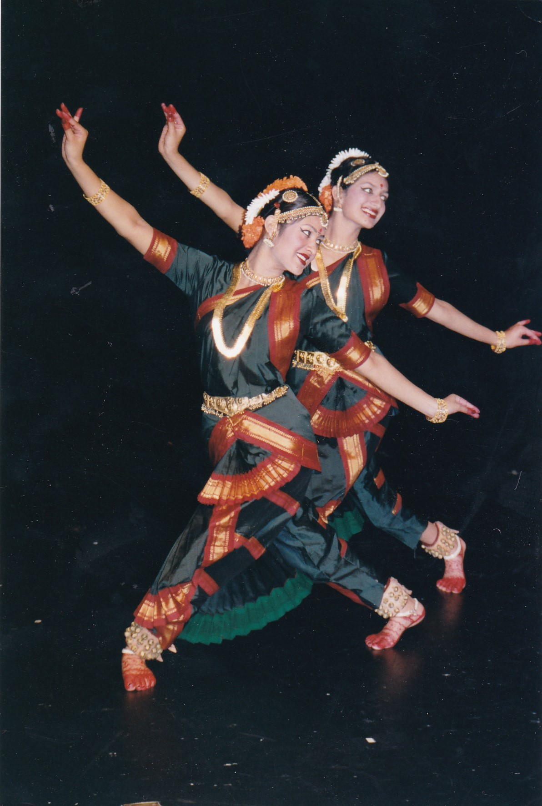

The School was founded in 1992 by Artistic Director Sheela Chandrashekar, acclaimed for her excellence in Bharata Natyam as a dancer, choreographer and teacher. Sheela is the creative force at Rathi School of Dance and has carved out a niche for its work of solo and group choreography. Sheela has been teaching in Ottawa since 1980. The Dance School repertoire has an uncompromising standard of excellence in every aspect of staging. The Dance School's dancers are acclaimed for their technical finesse and artistry. Rathi School is committed to showcasing Bharata Natyam as a universal art form in the Pandanallur Style.
The training offered at Rathi School of Dance is to illuminate Bharata Natyam as a personal practice and to bring out the relevance of Bharata Natyam training to our contemporary lives. In a culture where people are constantly searching and immersed in activity, Bharata Natyam throws light on the values of commitment, dedication, focus and discipline.
The Dance School supports graduates in presenting their debut graduation performance (Arangetram / Ranga Pravesha), a vital tradition in Bharata Natyam. The school graduates have gone on to become professional performers and teachers, sharing the art of Bharata Natyam in regional, national, and international contexts. The school is dedicated to nurturing a passion and excellence in the art of classical dance, with its training and development of a new generation of accomplished and versatile dancers. Rathi School students have performed in Canada, United States, Europe and India. The Dance Orchestra for Rathi School comprises of professional musicians from Canada, USA and India who provide live accompaniment for performances.